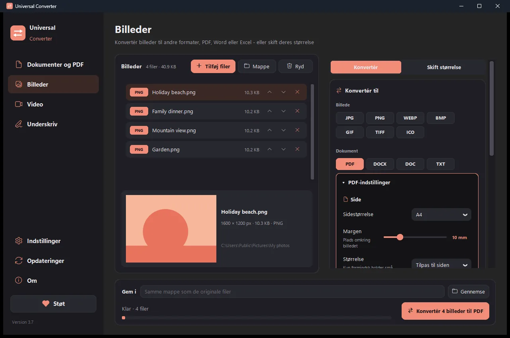
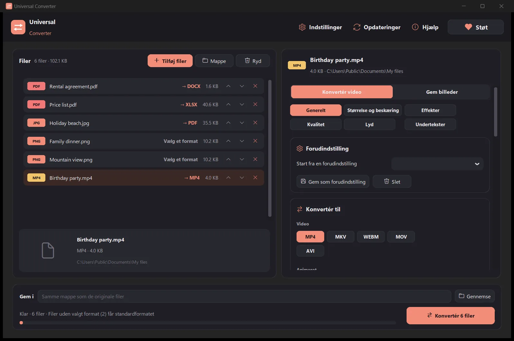
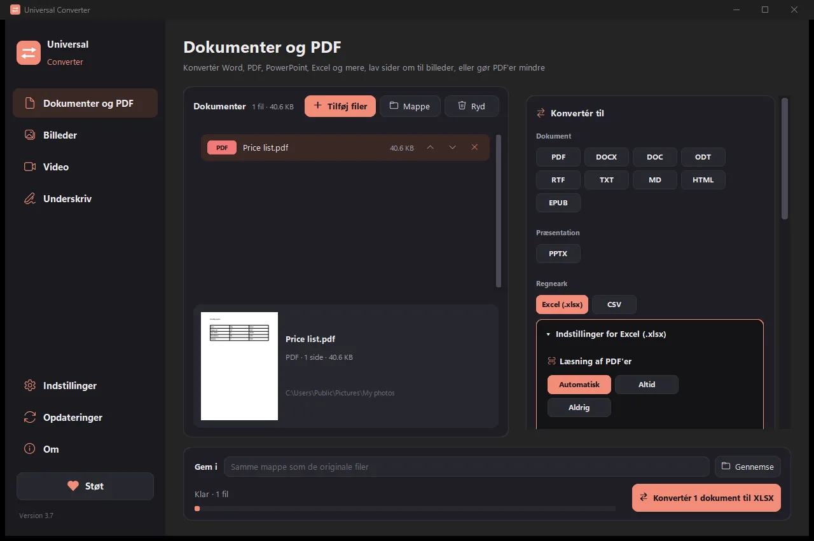
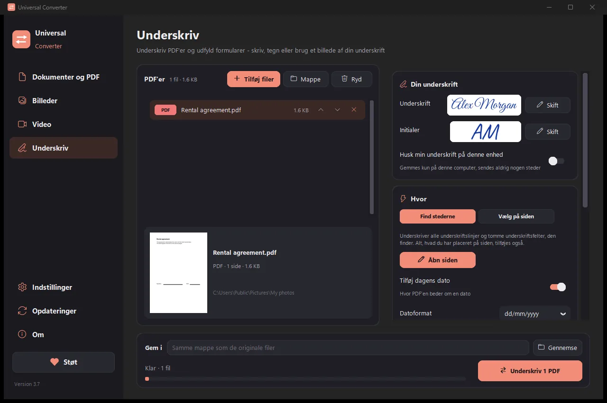
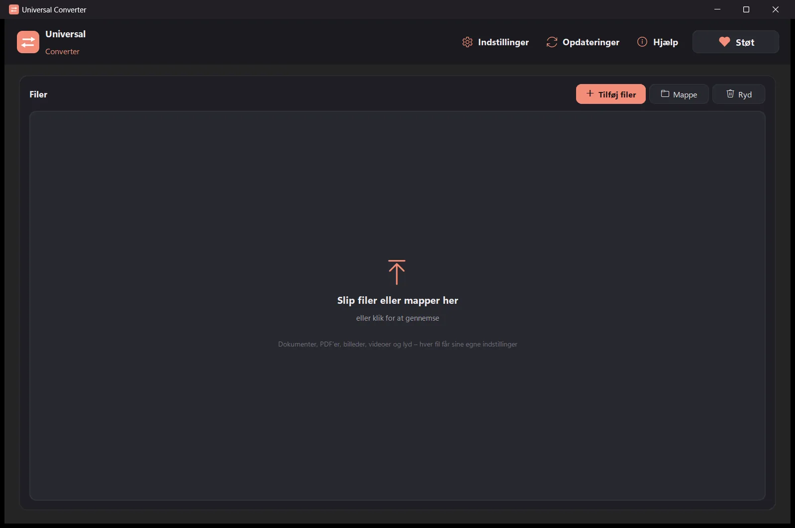

Konvertér dine filer på din egen enhed
Billeder, dokumenter, video og lyd, PDF'er og tabeller til Excel, alt i én app. Intet bliver uploadet: dine filer forlader aldrig din enhed.
Sådan installerer og opdaterer du
- Åbn den hentede .dmg-fil, og træk Universal Converter til Programmer.
- Åbn appen. Første gang blokerer macOS den, fordi den ikke er signeret af Apple: klik på OK.
- Åbn Systemindstillinger > Anonymitet og sikkerhed, rul ned, klik på Åbn alligevel, og indtast din adgangskode. Det gør du kun én gang.
Opdateringer: hvis du tillader det, når appen åbner første gang, søger den efter nye versioner, hver gang den starter, kontrollerer deres digitale signatur og installerer dem, når du vælger det.
Sådan installerer og opdaterer du
- Tryk på Download til Android på din telefon.
- Åbn den hentede fil. Hvis Android spørger, så tillad din browser eller filhåndtering at installere apps.
- Tryk på Installer.
Opdateringer: appen søger cirka én gang om dagen og siger til, når en ny version er klar. Download den på samme måde, og installer den oven på den gamle; dine indstillinger bevares.
Sådan installerer og opdaterer du
- Download .AppImage-filen.
- Gør den eksekverbar: højreklik, åbn Egenskaber > Tilladelser, og tillad at den køres som program (eller i en terminal: chmod +x Universal-Converter-*.AppImage).
- Dobbeltklik på den. Intet installeres: appen er denne ene fil.
Opdateringer: hvis du tillader det, når appen åbner første gang, søger den efter nye versioner, hver gang den starter, kontrollerer deres digitale signatur og erstatter AppImage-filen, hvor den ligger.

Privat
Alt kører på din enhed. Ingen uploads, ingen kø, ingen størrelsesgrænser.
Gratis
Gratis at bruge, uden reklamer, uden konto og uden vandmærke.
34 sprog
Engelsk, græsk, spansk, italiensk, tysk, fransk, portugisisk (Portugal og Brasilien), polsk, russisk, arabisk, hebraisk, kinesisk, japansk, koreansk, tamil, afrikaans, yoruba, hausa, hindi, indonesisk, tyrkisk, vietnamesisk, svensk, nederlandsk, dansk, ukrainsk, tjekkisk, rumænsk, bulgarsk, norsk, malajisk, filippinsk og swahili.
Fem værktøjer i ét vindue

Dokumenter og PDF
Konvertér mellem PDF, Word, ODT, RTF, TXT, Markdown, HTML, EPUB, PowerPoint og Excel. Lav sider om til billeder, og saml flere filer i én PDF. Skrifttyper, størrelser og farver bevares. Gør PDF'er mindre, til den størrelse du vælger. Scanninger og udfyldte formularer bliver til redigerbar tekst og tabeller, sat op som siden. Tabeller, også uden linjer som på kontoudtog, kommer ind i Word som rigtige tabeller, og gamle Word-filer (.doc) og PowerPoint-filer (.ppt) kan åbnes.
Billeder
Konvertér mellem JPG, PNG, WEBP, TIFF, BMP, GIF og ICO. Skift størrelse i pixels, procent eller filstørrelse, saml billeder i en PDF- eller Word-fil, og læs teksten i billeder (OCR). PDF'er kan også tilføjes: hver side bliver til et billede.

Video
Konvertér videoer mellem MP4, MKV, WebM, MOV og AVI, og komprimér dem med AV1, H.265, H.264 eller VP9. Klip, beskær, rotér og skift størrelse, lav GIF'er, gem billeder fra videoen, eller behold kun lyden som MP3, M4A, AAC, FLAC, WAV, AIFF, OGG, AC-3, MP2, WavPack, MKA, CAF eller Opus. Med flere videoer kan hver have sine egne indstillinger. På Android: MP4, MKV, WebM, MOV eller GIF, eller lyden som MP3, M4A, AAC, OGG, Opus, FLAC, WAV, AIFF eller MKA; klip, beskær, rotér, skift størrelse og gem billeder.

Excel
Træk tabeller ud af PDF'er, scanninger og fotos til Excel eller CSV: kontoudtog, fakturaer, prislister. Læser græsk, engelsk, spansk og mere end 30 andre sprog.

Underskriv
Underskriv PDF'er og udfyld formularer. Skriv dit navn i en håndskriftstil, tegn din underskrift, eller brug et foto af den. Appen finder selv underskriftslinjerne, eller du klikker eller trykker, hvor underskrift, initialer, dato, tekst eller flueben skal stå. Underskriv mange filer på én gang; originalerne forbliver urørte.
- Bruger dit grafikkort til video, når det kan: typisk 5 til 20 gange hurtigere.
- Træk hele mapper ind: alle filer konverteres på én gang.
- Én skærm til alle filer: tilføj dokumenter, billeder og videoer sammen, og hver får sine egne indstillinger.
- Fortæller om nye versioner; på Windows, Mac og Linux kan den installere dem for dig, digitalt kontrolleret.
- Lyst og mørkt udseende, der passer til din enhed.
Sådan virker det
- Åbn Universal Converter.
- Træk dine filer eller en hel mappe ind i vinduet, eller klik på Tilføj filer.
- Klik på Konvertér. De nye filer gemmes ved siden af originalerne eller i den mappe, du vælger.

Hvad den kan
- Konvertér en PDF til Word
- Konvertér Word-dokumenter til PDF
- Saml flere filer i én PDF
- Komprimér en PDF til en størrelse, du vælger
- Komprimér en PDF til 100 KB, 200 KB eller enhver størrelse til onlineformularer
- Konvertér PDF-sider til JPG-billeder
- Gør et scannet dokument til en redigerbar Word-fil
- Konvertér billeder mellem JPG, PNG, WEBP og mere
- Skift størrelse på billeder, eller formindsk dem til en filstørrelse
- Skift størrelse på et foto eller en underskrift til 20 KB, 50 KB eller præcise pixels
- Saml fotos i én PDF
- JPG til PDF under 100 KB
- Kopiér teksten fra et billede (OCR)
- Komprimér en video uden at uploade den
- Konvertér videoer mellem MP4, MKV, WebM, MOV og AVI
- Gem lyden fra en video som MP3
- Lav en GIF af en video
- Træk tabeller fra en PDF over i Excel
- Konvertér et kontoudtog i PDF til Excel
- Træk tabeller fra PDF-fakturaer over i Excel
- Underskriv en PDF
- Udfyld en PDF-formular
Spørgsmål
Er den virkelig gratis?
Ja. Universal Converter er gratis at bruge, uden reklamer, uden konto og uden tidsgrænse. Hvis den hjælper dig, kan du støtte udviklingen med et frivilligt bidrag, men du behøver aldrig.
Bliver mine filer uploadet nogen steder?
Nej. Hver konvertering sker på din egen enhed, så den virker også uden internetforbindelse. Appen går kun på nettet for at søge efter opdateringer, for at hente de alfabeter til tekstgenkendelse, du vælger, og, hvis du tillader det, for at sende anonyme fejlrapporter.
Er det sikkert at downloade den?
Ja. Før de kommer på denne side, bliver downloads til Windows, Mac, Linux og Android af hver version scannet af omkring 60–70 antivirusprogrammer på VirusTotal; linket under hver downloadknap åbner rapporten for den fil. Appen viser ingen reklamer og indsamler ingen personoplysninger, og versionen i Microsoft Store bliver også kontrolleret og signeret af Microsoft.
Windows viser en SmartScreen-advarsel. Er det normalt?
Ja. Installationsprogrammet er ikke kodesigneret endnu, så Windows genkender det ikke. Vælg "Flere oplysninger" og derefter "Kør alligevel". Opdateringer derefter kontrolleres digitalt af appen selv. Eller installer den fra Microsoft Store, som ikke viser nogen advarsel.
Hvordan åbner jeg den på en Mac?
Åbn den hentede fil, og træk Universal Converter til Programmer. Appen er ikke signeret af Apple, så første gang du åbner den, blokerer macOS den: klik på OK, åbn derefter Systemindstillinger > Anonymitet og sikkerhed, klik på "Åbn alligevel", og indtast din adgangskode. Det gør du kun én gang.
Hvordan installerer jeg den på Android?
Download APK-filen på din telefon, åbn den, og tillad installationen, når du bliver spurgt (Android 10 eller nyere). Alle 34 sprog er indbygget; vælg et i appens Indstillinger. Appen siger til, når der er en ny version.
Hvilke sprog taler den?
Appen findes på engelsk, græsk, spansk, italiensk, tysk, fransk, portugisisk (Portugal og Brasilien), polsk, russisk, arabisk, hebraisk, kinesisk, japansk, koreansk, tamil, afrikaans, yoruba, hausa, hindi, indonesisk, tyrkisk, vietnamesisk, svensk, nederlandsk, dansk, ukrainsk, tjekkisk, rumænsk, bulgarsk, norsk, malajisk, filippinsk og swahili. Du vælger i installationsprogrammet eller senere i Indstillinger.